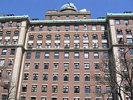

Mihajlo Pupin je rođen 9. listopada 1854. godine u selu Idvor (danas u općini Kovačica) u Banatu, tadašnje Austrijsko carstvo. Sin je oca Konstantina i majke Olimpijade, koji su imali desetoro djece. Nakon odlaska u Ameriku, promijenio je svoje ime u Mihajlo Idvorski Pupin (en. Michael Idvorsky Pupin), čime je naglasio svoje podrijetlo. 1888. godine oženio se Amerikankom Sarom Catharinom Jackson iz New Yorka, s kojom je imao kćer Barbaru. Brak je trajao svega osam godina, jer mu je supruga preminula od upale pluća.
Čitav život pamtio je majčine riječi, koje je naveo i u autobiografskom djelu:
„Dijete moje, ako želiš poći u svijet, o kome si toliko slušao na našim posijelima, moraš imati još jedan par očiju — oči za čitanje i pisanje. U svijetu ima mnogo čega o čemu ne možeš saznati ako ne znaš čitati i pisati. Znanje, to su zlatne ljestve preko kojih se ide u nebesa; znanje je svijetlost koja osvjetljuje naš put kroz život i vodi nas u život budućnosti pun vječne slave.”
U SAD-u je sljedećih pet godina radio kao fizički radnik i paralelno učio engleski, grčki i latinski jezik. Nakon tri godine pohađanja večernjih tečajeva, u jesen 1879. godine položio je prijamni ispit i upisao studij na Columbiji u New Yorku. Na studiju je bio oslobođen plaćanja školarine jer je bio uzoran student, a na kraju prve godine dobio je dvije novčane nagrade - za uspjeh iz grčkog jezika i matematike. Tijekom školovanja uglavnom se uzdržavao držanjem privatnih satova i radeći fizički teške poslove.
Studij je završio 1883. godine s izvrsnim uspjehom iz matematike i fizike, pri čemu je primio diplomu prvog akademskog stupnja. Potom se vratio u Europu, i to najprije u Veliku Britaniju (1883.—1885.) gdje je nastavio školovanje na Cambridgeu zahvaljujući dobivenoj stipendiji za studij matematike i fizike. Nakon školovanja u Cambridgeu, Pupin je studij eksperimentalne fizike započeo na Sveučilištu u Berlinu 1885. godine kod čuvenog profesora Hermanna von Helmholza, nakon čega je 1889. godine obranio doktorsku disertaciju iz područja fizičke kemije, na temu: "Osmotski pritisak i njegov odnos prema slobodnoj energiji".
Pupin je započeo svoju karijeru učitelja na Sveučilištu Columbia 1889. godine, gdje je radio punih četrdeset godina (do 1929.) Postao je redoviti profesor 1901. godine. Njegov položaj profesora teorijske elektrotehnike usmjerio je njegovo zanimanje na proučavanje elektromagnetnih fenomena. Električna rezonancija, kao predmet izučavanja, privukla je Pupinovu pozornost 1892. Kao rezultat toga, Pupin je pronašao električno strujno kolo s podešavanjem u rezonanciju, koji je našao primjenu u radio-vezama. Ovaj patent je kasnije prodao kompaniji Markoni. 1896. godine, nakon što je Rendgen 1895. objavio svoj pronalazak Х-zraka, Pupin je otkrio sekundarne rendgenske radijacije, a ubrzo nakon toga razvio je brzu metodu rendgenskog snimanja koja se sastoji u tome što se između objekta koji se snima i fotografske ploče, umeće fluorescentni ekran, čime je skraćeno vrijeme ekspozicije s trajanja od oko jednog sata na svega nekoliko sekundi. Ta metoda je našla široku primjenu i još uvijek se primjenjuje.
